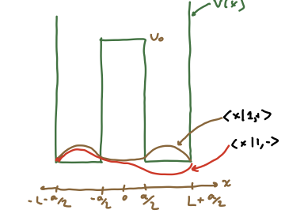
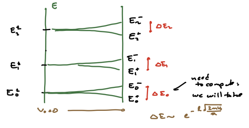
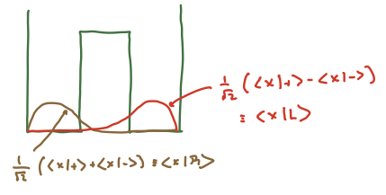

Two-state systems as phenomenological models#
Here we are going to consider the low-energy dynamics of generally complicated systems. While we have not gone into length in talking about time-dependent probes yet, you can intuit that interacting with a given system will generally involve adding or subtracting energy. For example, usually an experiment is a time-dependent process, so right there you know that energy will not be conserved. But by the energy-time uncertainty principle, if you interact sufficiently slowly, the energy input will not be large. Thus, if the systems starts in the ground state or first excited state, and the energy input is small compared to the energy difference between the first and second excited state, you can assume that before and after the experiment is done, it will remain in some superposition of teh ground state and first excited state. The Hilbert space is thus quite simple, and the Hamiltonian will be parameterized by just a few numbers (the entries of a \(2\times 2\) Hermitian matrix) which one can fit to experiments, in the case that first–principles calculations are too hard.
Double-well potential#
The first system we will examine is one that we could in principle solve exactly. Consider the following double-well potential for a 1d particle with mass \(m\):
Thus \(L\) is the width of each well, and \(a\) the width of the barrier.
Warmup: Infinite barrier#
To get some intuition for this we will start with the \(V_0 \to \infty\) case. In this case, we take \(\cH_{L,R}\) to be the Hilbert space for the particle in the left or right wells, and \(\cH_{\infty} = \cH_{L} \oplus \cH_{R}\). The particle can sit in either the left well or the right well, and the Hamiltonian is diagonal. The wavefunctions and eigenenergies are:
So each energy level is doubly degenerate, as the energy levels for the particle localized in the left or the right well are the same (since the wells have the same width and boundary conditions). Note that we can write these wavefunctions as
where \(A\) is an index labeling the wells.
In this case, parity is a clear symmetry of the theory. As we have already discussed, we can re-arrange the energy spectrum in terms of parity eigenstates:
Large but finite barrier#
If we let \(V_0\) be finite, the degeneracy is split as is generically the case in 1d problems. We can expect that the splitting goes to zero as \(V_0 \to \infty\) and remains very small for \(E \ll V_0\), since the barrier will look close to infinite. What we do know is that the energy eigenstates will be parity eigenstates.
A hand-waving argument is that the splitting scales like
The prefactor is based on a classical velocity \(v\) such that \(\half m v^2 = E\) and we have used the ground state energy for \(E\); \(L/v\) is proportional to the rate the particle his the barrier as is bounces back and forth in the well. That is the hand-waving part. The exponential prefactor can be calculated exactly or via the WKB approximation which we will discuss later. But we can start to see where it comes from: for \(E < V_0\), the wavefunction in the barrier region \(|x| \leq \frac{a}{2}\) is:
where
The precise value of \(A, B\) come from matching to the wavefunctions in the classically allowed (\(V = 0\)) regions.
Sketches of the two lowest-energy states, which are deformations of the ground states for finite \(V_0\), are shown below.

For any \(\ket{n,\pm}\) with \(E_n \ll V_0\), the story is similar. At infinite \(V_0\), the states are symmatric and antisymmetric combinations of the energy states in each of the two wells. For finite_V_0$ the states are close to this, with the wavefunction small but finite under the barrier. We can deduce that this will introduce no nodes for the symmetric case but introduce an additional node for the antisymmetric case. Since the energy eigenstates increase with the number of nodes, the antisymmetric wavefunction will have slightly higher energy than the symmetric wavefunction. The spectrum will deform as shown below.

Let us stick to the lowest-energy states, which we will call \(\ket{\pm}\). These will have energies \(E_{av} \pm \half \Delta E\) where \(E_{av}, \Delta E\) are functions of \(V_0, a, L\). As illustrated in the figure below, we can form lineaer combinations

Note that we do not get preciselocalization in one well or the other – that would require all \(\ket{n,\pm}\) (this is not meant to be an obvious statement, but it is worth thinking about).
Now let us start with the particle localized in the left well, by which we mean
Evolving this in time, we find
If we call the probability of the particle being found in the right well \(p_R = |\brket{R}{\psi(t)}\), a little algebra gives us
The interpretation is that a low-energy particle initially confined to one well will tunnel to the other well. This is a classically forbidden process. When the energy is well below the barrier, we define the tunneling time as the time for the particle state to evolve to \(\ket{R}\):
This is exponentially small in \(a\sqrt{2m V_0}/\hbar\), as discussed above. The exponential suppression \(\sim e^{-S/\hbar}\) for some \(S\) is characteristic of quantum tunneling processes.